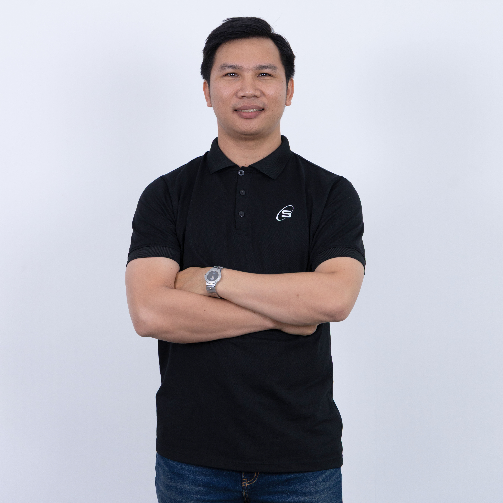

Ho Hai Nghia
01 / Executive Summary & Architecture Philosophy
Senior Technical Architect and Engineering Leader with 10 years of production craftsmanship, specializing in mission-critical distributed systems, enterprise event-driven cloud integrations (Azure & AWS), and big data processing pipelines. Champion of vendor-neutral infrastructure (OpenTofu, Terragrunt, rootless Podman/OCI) and strict ISO 27001 / Zero-Trust security compliance. Pioneer in orchestrating Multi-Agent Systems (MAS) and architecting high-ROI, governed AI-augmented SDLC workflows with deep model-effort calibration and token economics.
02 / Technical Competencies
| Languages | C# (.NET 8/10), Python, PHP, TypeScript, Node.js, Go, Rust, SQL |
| Cloud & IaC (Vendor-Neutral) | OpenTofu, Terragrunt, Bicep, Terraform, Podman (rootless / daemonless OCI), Docker Compose; Multi-Cloud Azure (Functions isolated, Service Bus, Blob, Event Grid, Key Vault, Entra ID SSO) & AWS (ECS, S3, RDS, Aurora MySQL, Redshift DWH, ALB, CloudFront, WAF, SQS, Lambda, Batch) |
| Architecture & Security Governance | Domain-Driven Design (DDD), Hexagonal Architecture / Ports & Adapters, Event-Driven Architecture (EDA), CQRS, Microservices, Transactional Outbox, ISO/IEC 27001 Compliance, Zero-Trust Architecture, Secret Zero, Least Privilege (RBAC/ABAC), OpenAPI/Bruno Contracts |
| Data & Storage | PostgreSQL, AWS Redshift (DWH), Aurora MySQL, Redis, Polars, PyArrow, Pandas, Kafka, MinIO/S3, Databricks, Snowflake |
| AI Systems & Strategic Orchestration | Multi-Agent Systems (MAS), Model Context Protocol (MCP), Spec-Driven AI SDLC, Model-Task Alignment & Reasoning Effort Calibration, Context Budgeting & Token Economics (Inference ROI Optimization across Claude, GPT, Gemini, Local SLMs), Trajectory Evaluation (LLM-as-a-Judge), Human-in-the-Loop Governance |
| Testing & CI/CD | Azure DevOps Pipelines, GitHub Actions, GitLab CI/CD, DevSecOps Security Scanning, xUnit, Moq, Azurite, Pest, PHPUnit, Jest, Pytest, Polly Resilience |
03 / Professional Experience
- Architecture & Leadership: Authored Basic Design, HLD, LLD; established core architecture, base repository, coding standards, and led sprint delivery for 8 engineers.
- Automated Submit Flow: Designed event-driven pipeline where Lasernet exports invoices (PDF/A-3 and Factur-X XML) to Azure Blob Storage, triggering Event Grid $\rightarrow$ Azure Service Bus queue (`einvoice-blob-events`). Azure Functions (.NET 8 isolated worker) processes in parallel, verifies SHA-256 hash, authenticates via OAuth 2.0 PKCE with refresh token rotation, submits to PDP Partner API, and synchronizes status back to D365 F&O.
- Lifecycle Webhook Ingestion: Built high-resilience HTTP Functions receiving status webhooks; implemented constant-time HMAC-SHA256 signature verification; enqueued into Azure Service Bus session queue (`einvoice-lifecycle`) for strict order preservation, deduplication, and DLQ handling.
- Directory Sync & Fallback Polling: Created Timer-triggered Functions for automated periodic status reconciliation and directory synchronization between D365 OData and PDP Directory API.
- Zero-Trust Cloud IaC: Automated 100% of Azure infrastructure across LAB, DEV, and PROD using Bicep IaC with User-Assigned Managed Identity and Key Vault references, eliminating connection strings. Configured Azure DevOps CI/CD.
- Resilience & Testing: Applied Polly policies (exponential backoff, jitter, Retry-After compliance); engineered test suites with xUnit, Moq, Azurite emulator, Service Bus emulator, and MockServer for E2E verification.
- Backend Architecture: Designed layered Laravel REST API serving Admin, Client, and Driver user groups securely.
- Security & Authorization: Implemented custom OAuth2 provider using Laravel Passport and designed granular Role-Based Access Control (RBAC) with 95+ distinct permissions.
- Containerization: Orchestrated multi-repo deployment and container environments using Docker Compose and Just task runner.
- Technical Leadership: Combined technical coordination and hands-on coding; established OpenAPI and Bruno contracts between frontend and micro-services.
- Cloud & DevOps: Designed AWS infrastructure via Terraform, containerized services with Docker Compose, and configured automated test verification gates.
- Integration: Built OAuth2 SSO Identity Provider, inter-service webhooks, and Univer spreadsheet data converter.
- Microservices Architecture: Separated Webhook API, AI workers, and web dashboard into decoupled services.
- AI Pipeline & Queueing: Built background workers consuming Git diffs and querying AI endpoints; used RabbitMQ to buffer bursts of PR events asynchronously.
- API & Scheduled Sync: Built REST APIs with Django REST Framework; scheduled background Celery/Redis tasks to sync patient records and lab results safely.
- Security: Implemented JWT authentication and encrypted data transmission for sensitive patient medical data.
- Hexagonal & DDD Design: Enforced strict Hexagonal Architecture and Domain-Driven Design (DDD) to isolate domain rules from legacy protocol adapters.
- High-Throughput Batch/ETL: Designed high-throughput batch processing pipelines synchronizing large-scale automotive data between S3 Data Lake and Aurora MySQL.
- Multi-Protocol Integrations: Coordinated data transfers across Kafka, HULFT, sFTP, and RVS with Japanese government agencies (MLIT, JARC) and PAG systems.
- AWS Cloud & Identity: Designed resilient AWS infrastructure (ECS, S3, Aurora MySQL, Transit Gateway); integrated Microsoft Entra ID (Azure AD) SSO via OAuth 2.0 / OIDC with enforced MFA.
- Quality Gates: Instituted comprehensive testing strategy (Architecture tests, E2E, Integration, Unit via Pest/PHPUnit) and Terraform IaC.
- Async Media Moderation: Re-architected AWS Rekognition moderation from synchronous blocking to event-driven SQS workers, eliminating upload timeouts.
- Multi-Tier Caching & DB: Resolved feed latency by engineering multi-tier Redis caching and indexing complex PostgreSQL queries.
- Geospatial Architecture: Implemented PostGIS to power location discovery, distance calculation, and proximity queries.
- Timeline Engine: Designed the "Discover" feed using a Hybrid Fan-out/Pull model to solve the "celebrity problem", along with custom ranking algorithms.
- AI Bidding Workflow: Pioneered Multi-Agent AI workflows during audit/proposal to distill vague requirements into structured plans, winning the contract.
- End-to-End CDP Architecture: Designed CDP to collect omnichannel data (in-store POS, Mobile) via Braze SDK streams.
- Big Data ETL Pipeline: Designed high-performance ETL pipeline using Python, Polars, and PyArrow to process CSV/Parquet data from S3 into AWS Redshift DWH.
- Unified Customer Profiles: Authored analytical models on Redshift generating unified customer profiles, powering real-time point/tier calculations.
- System Architecture: Established base architecture using DDD, Hexagonal patterns, Serverless microservices, and Event-Driven messaging.
- Big Data Query Optimization: Optimized analytical queries for high-volume Reports and real-time Dashboards; integrated Anura for fraud/bot filtering.
- Architecture & API: Designed base architecture, schemas, and REST APIs for multi-store dispatch and real-time progress tracking.
- API Engineering & Mentorship: Designed backend APIs in Laravel; mentored junior engineers on design patterns; conducted code reviews; handled EC2 deployments.
- Participated in relational database schema design; implemented core business logic APIs in Laravel.
- Led project delivery working directly with BrSE; developed base source code; handled production deployment and maintenance.
- Guided team members; performed backend coding and code reviews; managed server deployment across Dev/Staging/Production.
- Developed backend modules; deployed and maintained multi-tenant servers; trained institutional users.
04 / Technical Mentorship & Thought Leadership
Trained engineers on internal query engine execution, JOIN algorithms, Subqueries, CTEs, Window Functions, and common schema traps in PostgreSQL/MySQL.
Instructed on reading EXPLAIN ANALYZE, identifying bottlenecks, designing covering indexes, writing SARGable queries, and systematic measure-optimize-benchmark cycles.
Covered ACID guarantees, transaction isolation levels, MVCC concurrency, deadlock handling, star schemas, and materialized view refresh strategies.
Instructed on grounding AI agents with specification and context, establishing boundary rules for AI-led development, and Human-in-the-Loop quality verification.
Led workshops on integrating AI across the full SDLC; delineated developer responsibility in review, zero-trust verification, and protecting intellectual property.